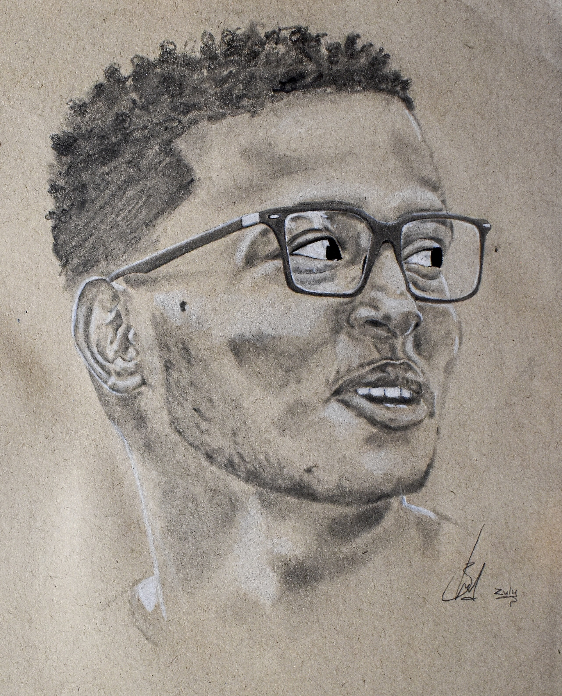
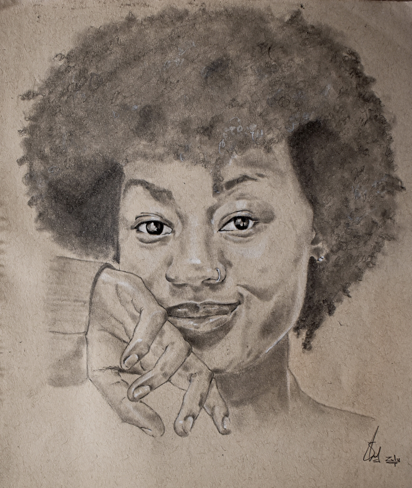

Portrait Artist | Up-and-Coming | Commissions & Limited Prints Available
I am Ezekiel Abassa, a portrait artist dedicated to capturing the depth and emotion of the human experience. My work has been featured in art galleries in the US, including the Gainesville Fine Arts Association during their 2024 Summer Showcase. I offer both limited edition prints and original pieces for sale, and I also accept commission requests for custom artwork. Let's create something beautiful together.

This striking charcoal portrait captures an intense moment of raw emotion, where the subject's expression combines defiance and vulnerability. The rough, textured strokes on the brown paper background emphasize the contrast between light and shadow, bringing depth and intensity to the artwork. The subtle highlights on the teeth and eyes draw the viewer's focus, while the deep shadows add a dramatic and almost haunting feel to the piece, making it a powerful visual statement.
Charcoal
This piece captures a serene expression, emphasizing the subject's contemplative gaze and gentle smile. The use of charcoal on textured brown paper allows for a play of light and shadow, creating depth and warmth. The careful rendering of details, especially in the hair and hands, brings out the subject's personality and adds a sense of intimacy to the artwork.
Charcoal
A dynamic portrait that draws attention to the subject's expressive profile, accentuated by the contrast of glasses and the natural texture of the hair. The charcoal medium on brown paper highlights the intricate details of the facial features and the subtle tonal variations. This piece captures a moment of introspection, blending realism with a touch of artistic abstraction.
CharcoalHigh-quality prints of my artwork, limited to 50 copies each. Perfect for collectors.
Own a one-of-a-kind piece, directly from my studio to your space. Inquire for availability.
I work closely with clients to create custom portraits that bring their vision to life.